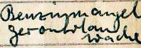
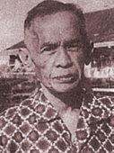
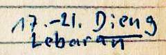
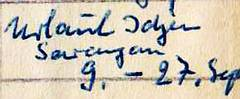

 Im Tagebuch ist Juli 1961 der Vermerk "Benzinmangel, Gerombolanwoche" zu finden, als Begründung dafür, dass die mittleren Tageseinnahmen aus der Privatpraxis mit 2693 Rupien unter dem Jahrsdurchschnitt blieben. Benzinmangel war in einem Land, das selbst reichlich Erdöl exportierte, der Normalfall geworden, und wenn man Benzin bekam, musste man es sorgfältig filtern, denn häufig war es mit Sand verlängert. Wasser im Benzin wurde man durch eine sorgfältige Absaugetechnik beim Umfüllen los.
"Gerombolanwoche" bedeutete, dass bei den nächtlichen Überfälle der muslim-fundamentalistischen Darum-Islam unter Kartosuwirjo ungewöhnlich viele Menschen ermordert wurden.
Im Jahre 1961 waren ein oder zwei Überfälle pro Nacht im Hauptgebiet der Gerombolan, in dem wir lebten, nicht mehr der Erwähnung wert. Vierzig Jahre später urteilt der zeitweilige Präsident von Indonesien, Abdurrahman Wahid über Darul Islam und Gerombolan überraschend milde. Bis heute sind die Spätfolgen der Gerombolanzeit nicht aufgearbeitet, wie Christopher Gunness von der BBC im Mai 2004 berichtet: Indonesia's Killing Field.
Wenn Benzinmangel und Gerombolanwoche zusammentrafen, dann konnten die Bewohner der Bergdörfer nicht mehr in die Stadt Kuningan zum Arzt gehen, und dann brachen die Einnahmen ein.
In diesem Jahr entsprach das Monatsgehalt, dass mein Vater als Chefarzt des Landkreises erhielt, mit 3066 Rupien den durchschnittlichen Tageseinnahmen aus der Privatpraxis von 3100 Rupien. Jeder Patient zahlte bar in der Sprechstunde, im Mittel 70 Rupien pro Besuch einschließlich der Medikamente, was dem Gegenwert von 1.5 kg Reis entsprach.
Eine Apotheke gabe es nur in der Großstadt Cirebon im Flachland, und so es war selbstverständlich, dass der Arzt die Medikamente ausgab. Es gab morgens und nachmittags Sprechstunden; im Mittel kamen 32 Patienten pro Sprechstunde.
Gegen Ende des Jahres 1961 war ich nicht mehr in Kuningan, sondern in Bandung in der Deutschen Schule. Deshalb steht sowohl für November als auch für Dezember "Bandung" im Kalender. Über Lebaran, dem Ende der Fastenzeit und höchsten Feiertag der Muslims, gab es 4 Tage Ferien im Dieng-Plateau, und im September 14 Tage in Sarangan und im Hochland vom Idjen.